![]()
library(gapminder)
some_model <- lm(lifeExp ~ gdpPercap + country,
data = gapminder)As a field, statistics is really bad at naming things.
Take, for instance, the term “fixed effects.” In econometrics and other social science-flavored statistics, this typically refers to categorical terms in a regression model. Like, if we run a model like this with gapminder data…
…we can say that we’ve added “country fixed effects.”
That’s all fine and good until we come to the world of hierarchical or multilevel models, which has its own issues with nomenclature and can’t decide what to even call itself:

If we fit a model like this with country-based offsets to the intercept…
library(lme4)
some_multilevel_model <- lmer(lifeExp ~ gdpPercap + (1 | country),
data = gapminder)…then we get to say that there are “country random effects” or “country group effects”, while gdpPercap is actually a “fixed effect” or “population-level effect”
“Fixed effects” in multilevel models aren’t at all the same as “fixed effects” in econometrics-land.
Wild.
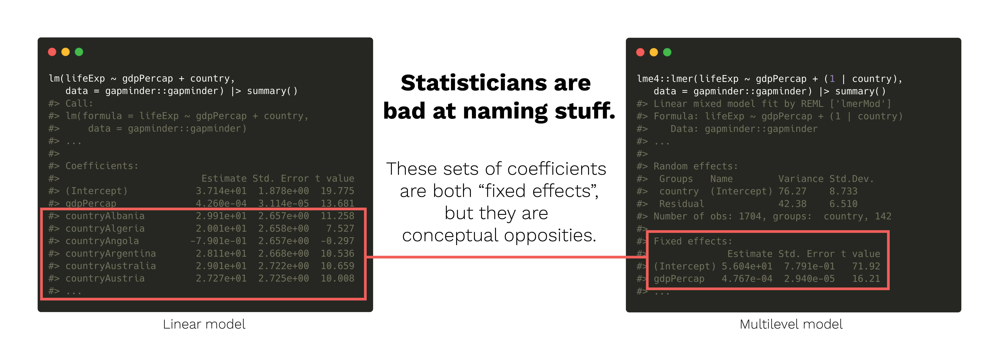
Another confusing term is the idea of “marginal effects.” One common definition of marginal effects is that they are slopes, or as the {marginaleffects} vignette says…
…partial derivatives of the regression equation with respect to each variable in the model for each unit in the data.
There’s a whole R package ({marginaleffects}) dedicated to calculating these, and I have a whole big long guide about this. Basically marginal effects are the change in the outcome in a regression model when you move one of the explanatory variables up a little while holding all other covariates constant.
But there’s also another definition (seemingly?) unrelated to the idea of partial derivatives or slopes! And once again, it’s a key part of the multilevel model world. I’ve run into it many times when reading about multilevel models (and I’ve even kind of alluded to it in past blog posts like this), but I’ve never fully understood what multilevel marginal effects are and how they’re different from slope-based marginal effects.
In multilevel models, you can calculate both marginal effects and conditional effects. Neither are necessarily related to slopes (though they both can be). They’re often mixed up. Even {brms} used to have a function named marginal_effects() that they’ve renamed to conditional_effects().
I’m not alone in my inability to remember the difference between marginal and conditional effects in multilevel models, it seems. Everyone mixes these up. TJ Mahr recently tweeted about the confusion:
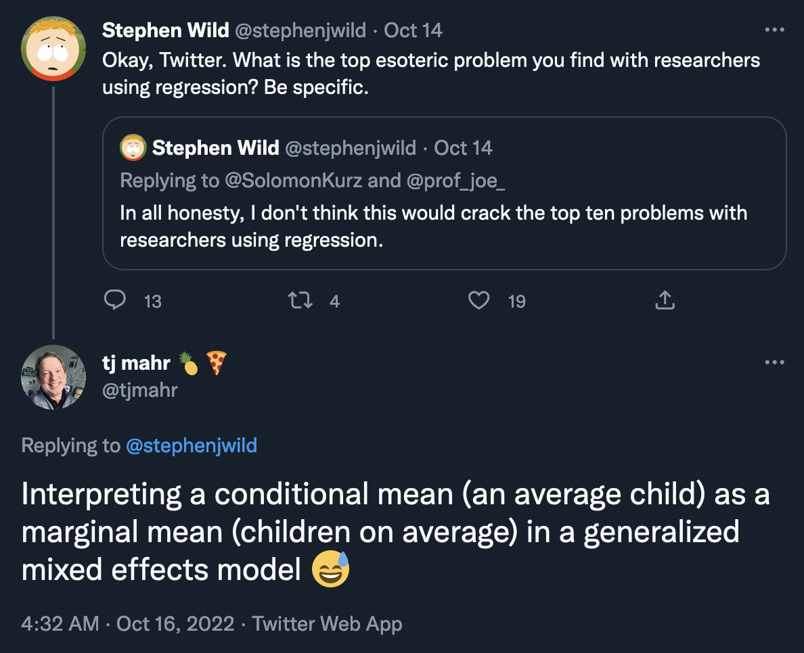
TJ studies language development in children and often works with data with repeated child subjects. His typical models might look something like this, with observations grouped by child:
tj_model <- lmer(y ~ x1 + x2 + (1 | child),
data = whatever)His data has child-based clusters, since individual children have repeated observations over time. We can find two different kinds of effects given this type of multilevel model: we can look at the effect of x1 or x2 in one typical child, or we can look at the effect of x1 or x2 across all children on average. The confusingly-named terms “conditional effect” and “marginal effect” refer to each of these “flavors” of effect:
- Conditional effect = average child
- Marginal effect = children on average
If we have country random effects like (1 | country) like I do in my own work, we can calculate the same two kinds of effects. Imagine a multilevel model like this:
library(lme4)
some_multilevel_model <- lmer(lifeExp ~ gdpPercap + (1 | country),
data = gapminder)Or more formally,
\[ \begin{aligned} \text{lifeExp} &\sim \mathcal{N}(\mu_{i_j}, \sigma_y) & \text{Life expectancy within countries } j \\ \mu_{i_j} &= (\beta_0 + b_{0_j}) + \beta_1\, \text{gdpPercap}_{i_j} & \text{Model of within-country variation} \\ b_{0_j} &\sim \mathcal{N}(0, \sigma_0) & \text{Random country offsets from global average} \end{aligned} \]
With this model, we can look at two different types of effects:
- Conditional effect = effect of
gdpPercap(\(\beta_1\)) in an average or typical country (where the random country offset \(b_{0_j}\) is 0) - Marginal effect = average effect of
gdpPercap(\(\beta_1\) again) across all countries (where the random country offset \(b_{0_j}\) is dealt with… somehow…)
This conditional vs. marginal distinction applies to any sort of hierarchical structure in multilevel models:
- Conditional effect = group-specific, subject-specific, cluster-specific, country-specific effect. We set all group-specific random offsets to 0 to find the effect for a typical group / subject / student / child / cluster / country / whatever.
- Marginal effect = global population-level average effect, or global effect, where group-specific differences are averaged out or integrated out or held constant.
Calculating these different effects can be tricky, even with OLS-like normal or Gaussian regression, and interpreting them can get extra complicated with generalized linear mixed models (GLMMs) where we use links like Poisson, negative binomial, logistic, or lognormal families. The math with GLMMs gets complicated—particularly with lognormal models. Kristoffer Magnusson has several incredible blog posts that explore the exact math behind each of these effects in a lognormal GLMM.
Vincent Arel-Bundock’s magisterial {marginaleffects} R package can calculate both conditional and marginal effects automatically. I accidentally stumbled across the idea of multilevel marginal and conditional effects in an earlier blog post, but there I did everything with {emmeans} rather than {marginaleffects}, and as I explore here, {marginaleffects} is great for calculating average marginal effects (AMEs) rather than marginal effects at the mean (MEMs). Also in that earlier guide, I don’t really use this “conditional” vs. “marginal” distinction and just end up calling everything marginal. So everything here is more in line with the seemingly standard multilevel model ideas of “conditional” and “marginal” effects.
Let’s load some libraries, use some neat colors and a nice ggplot theme, and get started.
Code
library(tidyverse)
library(brms)
library(tidybayes)
library(marginaleffects)
library(broom.mixed)
library(kableExtra)
library(scales)
library(ggtext)
library(patchwork)
# Southern Utah colors
clrs <- NatParksPalettes::natparks.pals("BryceCanyon")
# Custom ggplot themes to make pretty plots
# Get Noto Sans at https://fonts.google.com/specimen/Noto+Sans
theme_nice <- function() {
theme_bw(base_family = "Noto Sans") +
theme(panel.grid.minor = element_blank(),
plot.background = element_rect(fill = "white", color = NA),
plot.title = element_text(face = "bold"),
strip.text = element_text(face = "bold"),
strip.background = element_rect(fill = "grey80", color = NA),
legend.title = element_text(face = "bold"))
}Magnusson’s data and model: the effect of a treatment on gambling losses
To make sure I’ve translated Magnusson’s math into the corresponding (and correct) {marginaleffects} syntax, I recreate his analysis here. He imagines some sort of intervention or treatment \(\text{TX}\) that is designed to reduce the amount of dollars lost in gambling each week (\(Y\)). The individuals in this situation are grouped into some sort of clusters—perhaps neighborhoods, states, or countries, or even the same individuals over time if we have repeated longitudinal observations. The exact kind of cluster doesn’t matter here—all that matters is that observations are nested in groups, and those groups have their own specific characteristics that influence individual-level outcomes. In this simulated data, there are 20 clusters, with 30 individuals in each cluster, with 600 total observations.
To be more formal about the structure, we can say that every outcome \(Y\) gets two subscripts for the cluster (\(j\)) and person inside each cluster (\(i_j\)). We thus have \(Y_{i_j}\) where \(i_j \in \{1, 2, \dots, 30\}\) and \(j \in \{1, 2, \dots, 20\}\). The nested, hierarchical, multilevel nature of the data makes the structure look something like this:
I’ve included Magnusson’s original code for generating this data here, but you can also download an .rds version of it here, or use the URL directly with readr::read_rds():
d <- readr::read_rds("https://www.andrewheiss.com/blog/2022/11/29/conditional-marginal-marginaleffects/df_example_lognormal.rds")Kristoffer Magnusson’s original data generation code
#' Generate lognormal data with a random intercept
#'
#' @param n1 patients per cluster
#' @param n2 clusters per treatment
#' @param B0 log intercept
#' @param B1 log treatment effect
#' @param sd_log log sd
#' @param u0 SD of log intercepts (random intercept)
#'
#' @return a data.frame
gen_data <- function(n1, n2, B0, B1, sd_log, u0) {
cluster <- rep(1:(2 * n2), each = n1)
TX <- rep(c(0, 1), each = n1 * n2)
u0 <- rnorm(2 * n2, sd = u0)[cluster]
mulog <- (B0 + B1 * TX + u0)
y <- rlnorm(2 * n1 * n2, meanlog = mulog, sdlog = sd_log)
d <- data.frame(cluster,
TX,
y)
d
}
set.seed(4445)
pars <- list("n1" = 30, # observations per cluster
"n2" = 10, # clusters per treatment
"B0" = log(500),
"B1" = log(0.5),
"sd_log" = 0.5,
"u0" = 0.5)
d <- do.call(gen_data,
pars)The model of the effect of \(\text{TX}\) on gambling losses for individuals nested in clusters can be written formally like this, with cluster \(j\)-specific offsets to the \(\beta_0\) intercept term (i.e. \(b_{0_j}\), or cluster random effects):
\[ \begin{aligned} \log (Y_{i_j}) &\sim \mathcal{N}(\mu_{i_j}, \sigma_y) & \text{Gambling losses for individual $i$ within cluster } j \\ \mu_{i_j} &= (\beta_0 + b_{0_j}) + \beta_1\, \text{TX}_{i_j} & \text{Model of within-cluster variation} \\ b_{0_j} &\sim \mathcal{N}(0, \sigma_0) & \text{Random cluster offsets from global average} \end{aligned} \]
We can fit this model with {brms} (or lme4::lmer() if you don’t want to be Bayesian):
fit <- brm(
bf(y ~ 1 + TX + (1 | cluster)),
family = lognormal(),
data = d,
chains = 4, iter = 5000, warmup = 1000, seed = 4445
)fit
## Family: lognormal
## Links: mu = identity; sigma = identity
## Formula: y ~ 1 + TX + (1 | cluster)
## Data: dat (Number of observations: 600)
## Draws: 4 chains, each with iter = 5000; warmup = 1000; thin = 1;
## total post-warmup draws = 16000
##
## Group-Level Effects:
## ~cluster (Number of levels: 20)
## Estimate Est.Error l-95% CI u-95% CI Rhat Bulk_ESS Tail_ESS
## sd(Intercept) 0.63 0.12 0.45 0.92 1.00 2024 3522
##
## Population-Level Effects:
## Estimate Est.Error l-95% CI u-95% CI Rhat Bulk_ESS Tail_ESS
## Intercept 6.21 0.20 5.81 6.62 1.00 2052 3057
## TX -0.70 0.29 -1.28 -0.13 1.00 2014 2843
##
## Family Specific Parameters:
## Estimate Est.Error l-95% CI u-95% CI Rhat Bulk_ESS Tail_ESS
## sigma 0.51 0.01 0.48 0.54 1.00 7316 8256
##
## Draws were sampled using sample(hmc). For each parameter, Bulk_ESS
## and Tail_ESS are effective sample size measures, and Rhat is the potential
## scale reduction factor on split chains (at convergence, Rhat = 1).There are four parameters that we care about in that huge wall of text. We’ll pull them out as standalone objects (using TJ Mahr’s neat model-to-list trick) and show them in a table so we can keep track of everything easier.
Code
r_fit <- fit %>%
tidy() %>%
mutate(term = janitor::make_clean_names(term)) %>%
split(~term)
B0 <- r_fit$intercept$estimate
B1 <- r_fit$tx$estimate
sigma_y <- r_fit$sd_observation$estimate
sigma_0 <- r_fit$sd_intercept$estimateCode
fit %>%
tidy() %>%
mutate(Parameter = c("\\(\\beta_0\\)", "\\(\\beta_1\\)",
"\\(\\sigma_0\\)", "\\(\\sigma_y\\)")) %>%
mutate(Description = c("Global average gambling losses across all individuals",
"Effect of treatment on gambling losses for all individuals",
"Between-cluster variability of average gambling losses",
"Within-cluster variability of gambling losses")) %>%
mutate(term = glue::glue("<code>{term}</code>"),
estimate = round(estimate, 3)) %>%
select(Parameter, Term = term, Description, Estimate = estimate) %>%
kbl(escape = FALSE) %>%
kable_styling(full_width = FALSE)| Parameter | Term | Description | Estimate |
|---|---|---|---|
| \(\beta_0\) | (Intercept) |
Global average gambling losses across all individuals | 6.210 |
| \(\beta_1\) | TX |
Effect of treatment on gambling losses for all individuals | -0.702 |
| \(\sigma_0\) | sd__(Intercept) |
Between-cluster variability of average gambling losses | 0.635 |
| \(\sigma_y\) | sd__Observation |
Within-cluster variability of gambling losses | 0.507 |
There are a few problems with these estimates though: (1) they’re on the log odds scale, which isn’t very interpretable, and (2) neither the intercept term nor the \(\text{TX}\) term incorporate any details about the cluster-level effects beyond the extra information we get through partial pooling. So our goal here is to transform these estimates into something interpretable that also incorporates group-level information.
Conditional effects, or effect of a variable in an average cluster
Conditional effects
Conditional effects = average or typical cluster; random offsets \(b_{0_j}\) set to 0
Conditional effects refer to the effect of a variable in a typical group—country, cluster, school, subject, or whatever else is in the (1 | group) term in the model. “Typical” here means that the random offset \(b_{0_j}\) is set to zero, or that there are no random effects involved.
Average outcomes for a typical cluster
The average outcome \(Y_{i_j}\) across the possible values of \(\text{TX}\) for a typical cluster is formally defined as
\[ \textbf{E}(Y_{i_j} \mid b_{0_j} = 0, \text{TX} = \{0, 1\}) \]
Exactly how you calculate this mathematically depends on the distribution family. For a lognormal distribution, it is this:
\[ \textbf{E}(Y_{i_j} \mid b_{0_j} = 0, \text{TX} = \{0, 1\}) = \exp \left((\beta_0 + b_{0_j}) + \beta_1 \text{TX}_i + \frac{\sigma_y^2}{2}\right) \]
TXs <- c("0" = 0, "1" = 1)
b0j <- 0
exp((B0 + b0j) + (B1 * TXs) + (sigma_y^2 / 2))
## 0 1
## 566 281We can calculate this automatically with marginaleffects::predictions() by setting re_formula = NA to ignore all random effects, or to set all the random \(b_{0_j}\) offsets to zero:
predictions(
fit,
newdata = datagrid(TX = c(0, 1)),
by = "TX",
re_formula = NA
)## # A tibble: 2 × 6
## rowid type TX predicted conf.low conf.high
## <int> <chr> <dbl> <dbl> <dbl> <dbl>
## 1 1 response 0 566. 379. 857.
## 2 2 response 1 281. 188. 425.Because we’re working with Bayesian posteriors, we might as well do neat stuff with them instead of just collapsing them down to single-number point estimates. The posteriordraws() function in {marginaleffects} lets us extract the modified/calculated MCMC draws, and then we can plot them with {tidybayes} / {ggdist}:
conditional_preds <- predictions(
fit,
newdata = datagrid(TX = c(0, 1)),
by = "TX",
re_formula = NA
) %>%
posteriordraws()p_conditional_preds <- conditional_preds %>%
ggplot(aes(x = draw, fill = factor(TX))) +
stat_halfeye() +
scale_fill_manual(values = c(clrs[5], clrs[1])) +
scale_x_continuous(labels = label_dollar()) +
labs(x = "Gambling losses", y = "Density", fill = "TX",
title = "Conditional cluster-specific means",
subtitle = "Typical cluster where *b*<sub>0<sub>j</sub></sub> = 0") +
coord_cartesian(xlim = c(100, 1000)) +
theme_nice() +
theme(plot.subtitle = element_markdown())
p_conditional_preds
Neat.
ATE for a typical cluster
The average treatment effect (ATE) for a binary treatment is the difference between the two averages when \(\text{TX} = 1\) and \(\text{TX} = 0\):
\[ \textbf{E}(Y_{i_j} \mid b_{0_j} = 0, \text{TX} = 1) - \textbf{E}(Y_{i_j} \mid b_{0_j} = 0, \text{TX} = 0) \]
For a lognormal family, it’s this:
\[ \begin{aligned} &\textbf{E}(Y_{i_j} \mid b_{0_j} = 0, \text{TX} = 1) - \textbf{E}(Y_{i_j} \mid b_{0_j} = 0, \text{TX} = 0) = \\ &\qquad \exp \left((\beta_0 + b_{0_j}) + \beta_1 + \frac{\sigma_y^2}{2}\right) - \exp \left((\beta_0 + b_{0_j}) + \frac{\sigma_y^2}{2}\right) \end{aligned} \]
TXs <- c("0" = 0, "1" = 1)
b0j <- 0
(exp((B0 + b0j) + (B1 * TXs[2]) + (sigma_y^2 / 2)) -
exp((B0 + b0j) + (B1 * TXs[1]) + (sigma_y^2 / 2))) %>%
unname()
## [1] -286We can again calculate this by setting re_formula = NA in marginaleffects::comparisons():
# Cluster-specific average treatment effect (when offset is 0)
comparisons(
fit,
variables = "TX",
re_formula = NA
) %>%
tidy()## # A tibble: 1 × 6
## type term contrast estimate conf.low conf.high
## <chr> <chr> <chr> <dbl> <dbl> <dbl>
## 1 response TX 1 - 0 -282. -590. -51.3And here’s what the posterior of that conditional ATE looks like:
conditional_ate <- comparisons(
fit,
variables = "TX",
re_formula = NA
) %>%
posteriordraws()p_conditional_ate <- conditional_ate %>%
ggplot(aes(x = draw)) +
stat_halfeye(fill = clrs[3]) +
scale_x_continuous(labels = label_dollar(style_negative = "minus")) +
labs(x = "(TX = 1) − (TX = 0)", y = "Density",
title = "Conditional cluster-specific ATE",
subtitle = "Typical cluster where *b*<sub>0<sub>j</sub></sub> = 0") +
coord_cartesian(xlim = c(-900, 300)) +
theme_nice() +
theme(plot.subtitle = element_markdown())
p_conditional_ate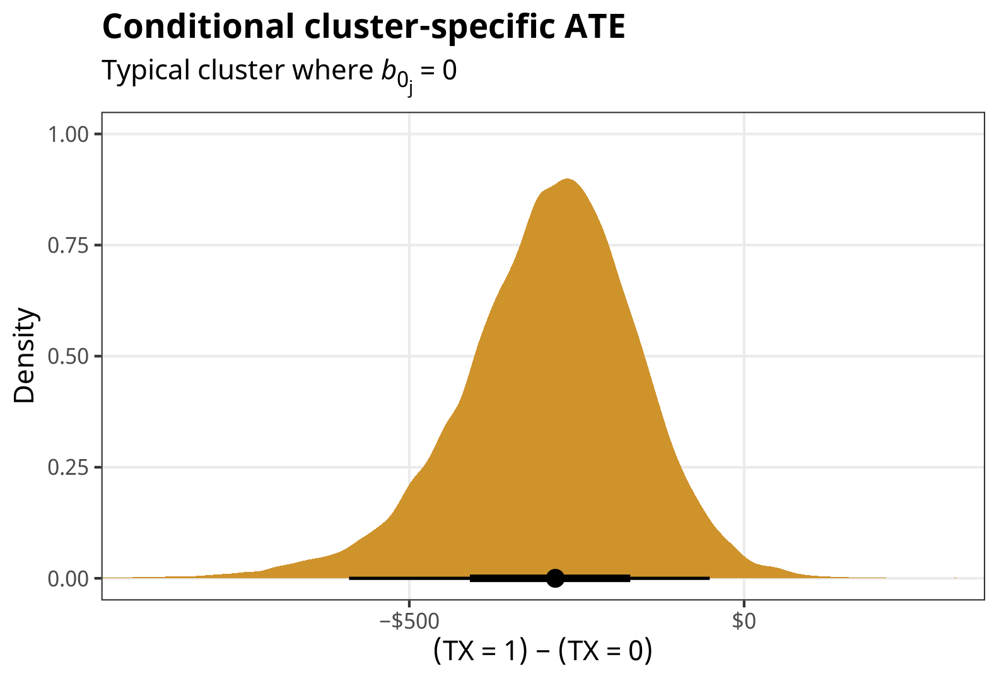
Marginal effects, or effect of a variable across clusters on average
Marginal effects
Marginal effects = global/population-level effect; clusters on average; random offsets \(b_{0_j}\) are incorporated into the estimate
Marginal effects refer to the global- or population-level effect of a variable. In multilevel models, coefficients can have random group-specific offsets to a global mean. That’s what the \(b_{0_j}\) in \((\beta_0 + b_{0_j})\) is in the formal model we defined earlier:
\[ \begin{aligned} \mu_{i_j} &= (\beta_0 + b_{0_j}) + \beta_1\, \text{TX}_i & \text{Model of within-cluster variation} \\ b_{0_j} &\sim \mathcal{N}(0, \sigma_0) & \text{Random cluster offsets} \end{aligned} \]
By definition, these offsets are distributed normally with a mean of 0 and a standard deviation of \(\sigma_0\), or sd__(Intercept) in {brms} output. We can visualize these cluster-specific offsets to get a better feel for how they work:
Code
fit %>%
linpred_draws(tibble(cluster = unique(d$cluster),
TX = 0)) %>%
mutate(offset = B0 - .linpred) %>%
ungroup() %>%
mutate(cluster = fct_reorder(factor(cluster), offset, .fun = mean)) %>%
ggplot(aes(x = offset, y = cluster)) +
geom_vline(xintercept = 0, color = clrs[2]) +
stat_pointinterval(color = clrs[4]) +
labs(x = "*b*<sub>0</sub> offset from β<sub>0</sub>") +
theme_nice() +
theme(axis.title.x = element_markdown())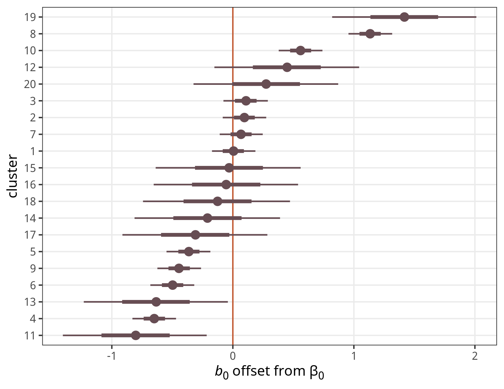
The intercept for Cluster 1 here is basically the same as the global \(\beta_0\) coefficient; Cluster 19 has a big positive offset, while Cluster 11 has a big negative offset.
The model parameters show the whole range of possible cluster-specific intercepts, or \(\beta_0 \pm \sigma_0\):
ggplot() +
stat_function(fun = ~dnorm(., mean = B0, sd = sigma_0^2),
geom = "area", fill = clrs[4]) +
xlim(4, 8) +
labs(x = "Possible cluster-specific intercepts", y = "Density",
title = glue::glue("Normal(µ = {round(B0, 3)}, σ = {round(sigma_0, 3)}<sup>2</sup>)")) +
theme_nice() +
theme(plot.title = element_markdown())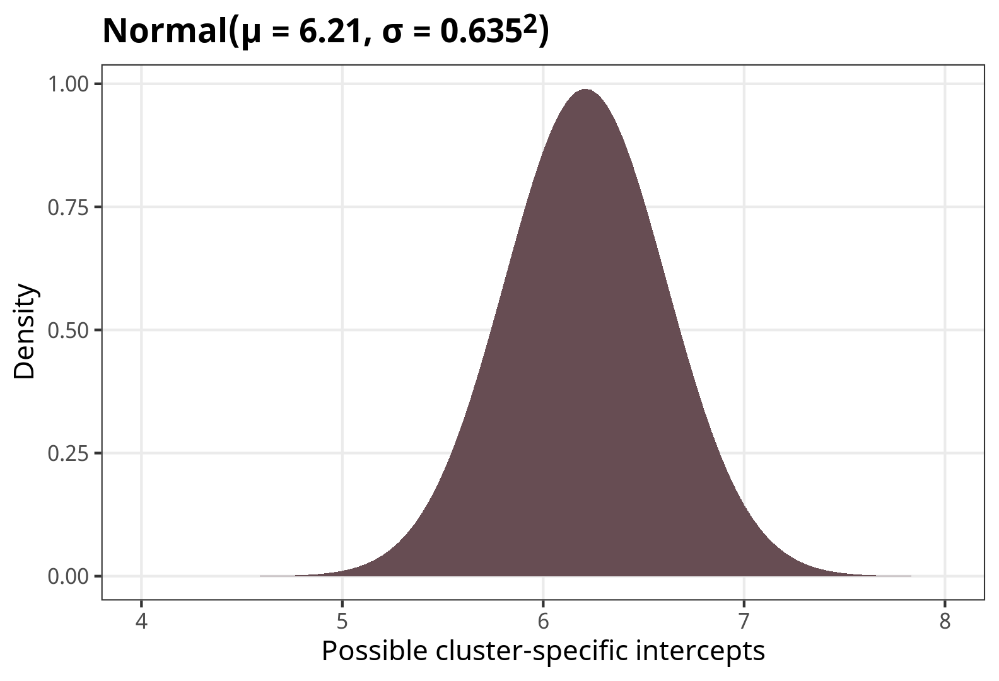
When generating population-level estimates, then, we need to somehow incorporate this range of possible cluster-specific intercepts into the population-level predictions. We can do this a couple different ways: we can (1) average, marginalize or integrate across them, or (2) integrate them out.
Average population-level outcomes
The average outcome \(Y_{i_j}\) across the possible values of \(\text{TX}\) for all clusters together is formally defined as
\[ \textbf{E}(Y_{i_j} \mid \text{TX} = \{0, 1\}) \]
As with the conditional effects, the equation for calculating this depends on the family you’re using. For lognormal families, it’s this incredibly scary formula:
\[ \textbf{E}(Y_{i_j} \mid \text{TX} = \{0, 1\}) = \int \exp \left(x + \sigma_y^2 / 2 \right) \, f_{\texttt{dnorm}} \left(x, \left(\beta_0 + \beta_1 \text{TX} \right), \sigma_0^2 \right) \,dx \]
Wild. This is a mess because it integrates over the normally-distributed cluster-specific offsets, thus incorporating them all into the overall effect.
We can calculate this integral in a few different ways. Kristoffer Magnusson shows three different ways to calculate this hairy integral in his original post:
Numeric integration with
integrate():B_TXs <- c(B0, B0 + B1) %>% set_names(c("0", "1")) B_TXs %>% map(~{ integrate( f = function(x) { exp(x + sigma_y ^ 2 / 2) * dnorm(x, ., sd = sigma_0) }, lower = B0 - 10 * sigma_0, upper = B0 + 10 * sigma_0 )$value }) ## $`0` ## [1] 692 ## ## $`1` ## [1] 343A magical moment-generating function for the lognormal distribution:
exp(B_TXs + (sigma_0^2 + sigma_y^2)/2) ## 0 1 ## 692 343Brute force Monte Carlo integration, where we create a bunch of hypothetical cluster offsets \(b_{0_j}\) with a mean of 0 and a standard deviation of \(\sigma_0\), calculate the average outcome, then take the average of all those hypothetical clusters:
# A bunch of hypothetical cluster offsets sigma_0_i <- rnorm(1e5, 0, sigma_0) B_TXs %>% map(~{ mean(exp(. + sigma_0_i + sigma_y^2/2)) }) ## $`0` ## [1] 694 ## ## $`1` ## [1] 344
Those approaches are all great, but the math can get really complicated if there are interaction terms or splines or if you have more complex random effects structures (random slope offsets! nested groups!)
So instead we can use {marginaleffects} to handle all that complexity for us.
Average / marginalize / integrate across existing random effects: Here we calculate predictions for \(\text{TX} = \{0, 1\}\) within each of the existing clusters. We then collapse them into averages for each level of \(\text{TX}\). The values here are not identical to what we found with the earlier approaches, though they’re in the same general area. I’m not 100% why—I’m guessing it’s because there aren’t a lot of clusters to work with, so the averages aren’t really stable.
predictions( fit, newdata = datagrid(TX = c(0, 1), cluster = unique), by = "TX", re_formula = NULL )## # A tibble: 2 × 5 ## type TX predicted conf.low conf.high ## <chr> <dbl> <dbl> <dbl> <dbl> ## 1 response 0 647. 502. 905. ## 2 response 1 321. 250. 443.We can visualize the posteriors too:
marginal_preds <- predictions( fit, newdata = datagrid(TX = c(0, 1), cluster = unique), by = "TX", re_formula = NULL ) %>% posteriordraws()p_marginal_preds <- marginal_preds %>% ggplot(aes(x = draw, fill = factor(TX))) + stat_halfeye() + scale_fill_manual(values = colorspace::lighten(c(clrs[5], clrs[1]), 0.4)) + scale_x_continuous(labels = label_dollar()) + labs(x = "Gambling losses", y = "Density", fill = "TX", title = "Marginal population-level means", subtitle = "Random effects averaged / marginalized / integrated") + coord_cartesian(xlim = c(100, 1500)) + theme_nice() p_marginal_preds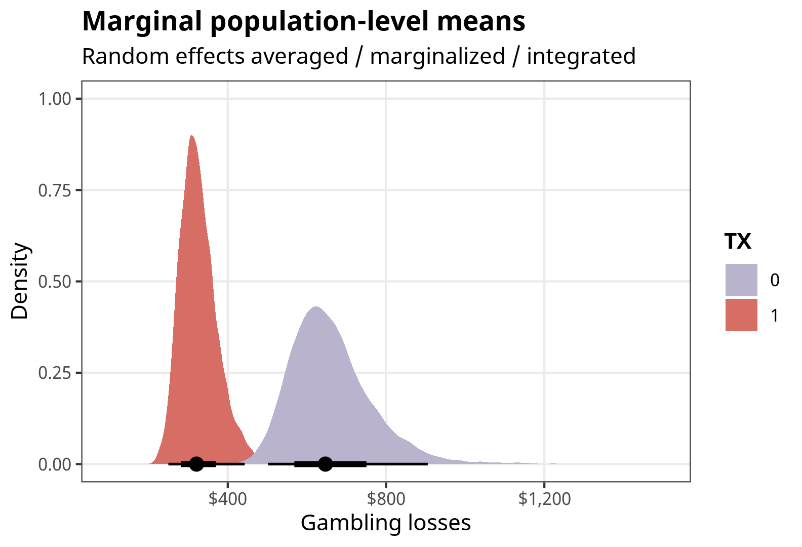
Integrate out random effects: Instead of using the existing cluster intercepts, we can integrate out the random effects by generating predictions for a bunch of clusters (like 100), and then collapse those predictions into averages. This is similar to the intuition of brute force Monte Carlo integration in approach #3 earlier. This takes a long time! It results in the same estimates we found with the mathematical approaches in #1, #2, and #3 earlier.
predictions(fit, newdata = datagrid(TX = c(0, 1), cluster = c(-1:-100)), allow_new_levels = TRUE, sample_new_levels = "gaussian", by = "TX")## # A tibble: 2 × 5 ## type TX predicted conf.low conf.high ## <chr> <dbl> <dbl> <dbl> <dbl> ## 1 response 0 682. 461. 1168. ## 2 response 1 340. 227. 577.marginal_preds_int <- predictions( fit, newdata = datagrid(TX = c(0, 1), cluster = c(-1:-100)), re_formula = NULL, allow_new_levels = TRUE, sample_new_levels = "gaussian", by = "TX" ) %>% posteriordraws()p_marginal_preds_int <- marginal_preds_int %>% ggplot(aes(x = draw, fill = factor(TX))) + stat_halfeye() + scale_fill_manual(values = colorspace::lighten(c(clrs[5], clrs[1]), 0.4)) + scale_x_continuous(labels = label_dollar()) + labs(x = "Gambling losses", y = "Density", fill = "TX", title = "Marginal population-level means", subtitle = "Random effects integrated out") + coord_cartesian(xlim = c(100, 1500)) + theme_nice() p_marginal_preds_int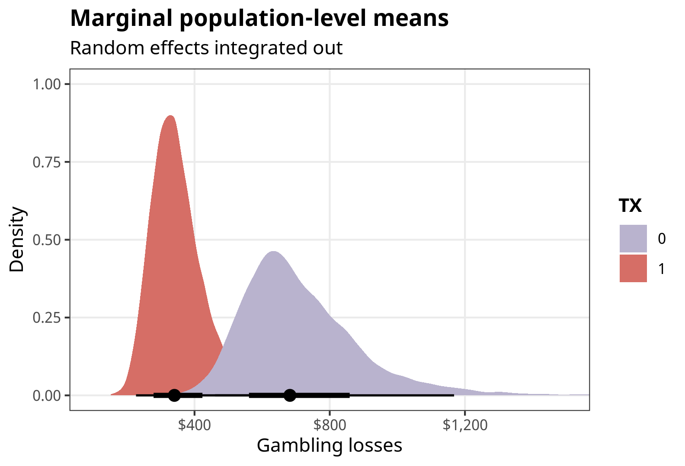
Population-level ATE
The average treatment effect (ATE) for a binary treatment is the difference between the two averages when \(\text{TX} = 1\) and \(\text{TX} = 0\), after somehow incorporating all the random cluster-specific offsets:
\[ \textbf{E}(Y_{i_j} \mid \text{TX} = 1) - \textbf{E}(Y_{i_j} \mid \text{TX} = 0) \]
For a lognormal family, it’s this terrifying thing:
\[ \begin{aligned} &\textbf{E}(Y_{i_j} \mid \text{TX} = 1) - \textbf{E}(Y_{i_j} \mid \text{TX} = 0) = \\ &\qquad \int \exp \left(x + \sigma_y^2 / 2 \right) \, f_{\texttt{dnorm}} \left(x, \left(\beta_0 + \beta_1 \right), \sigma_0^2 \right) \,dx \ - \\ &\qquad \int \exp \left(x + \sigma_y^2 / 2 \right) \, f_{\texttt{dnorm}} \left(x, \beta_0, \sigma_0^2 \right) \,dx \end{aligned} \]
That looks scary, but really it’s just the difference in the two estimates we found before: \(\textbf{E}(Y_{i_j} \mid \text{TX} = 1)\) and \(\textbf{E}(Y_{i_j} \mid \text{TX} = 0)\). We can use the same approaches from above and just subtract the two estimates, like this with the magical moment-generating function thing:
Population-level ATE with moment-generating function:
exp(B_TXs[2] + (sigma_0^2 + sigma_y^2)/2) - exp(B_TXs[1] + (sigma_0^2 + sigma_y^2)/2) ## 1 ## -349
We can do this with {marginaleffects} too, either by averaging / marginalizing / integrating across existing clusters (though again, this weirdly gives slightly different results) or by integrating out the random effects from a bunch of hypothetical clusters (which gives the same result as the more analytical / mathematical estimates):
Average / marginalize / integrate across existing random effects:
# Marginal treatment effect (or global population level effect) comparisons( fit, variables = "TX", re_formula = NULL ) %>% tidy()## # A tibble: 1 × 6 ## type term contrast estimate conf.low conf.high ## <chr> <chr> <chr> <dbl> <dbl> <dbl> ## 1 response TX 1 - 0 -326. -652. -60.9marginal_ate <- comparisons( fit, variables = "TX", re_formula = NULL ) %>% posteriordraws()p_marginal_ate <- marginal_ate %>% group_by(drawid) %>% summarize(draw = mean(draw)) %>% ggplot(aes(x = draw)) + stat_halfeye(fill = colorspace::lighten(clrs[3], 0.4)) + scale_x_continuous(labels = label_dollar(style_negative = "minus")) + labs(x = "(TX = 1) − (TX = 0)", y = "Density", title = "Marginal population-level ATE", subtitle = "Random effects averaged / marginalized / integrated") + coord_cartesian(xlim = c(-900, 300)) + theme_nice() p_marginal_ate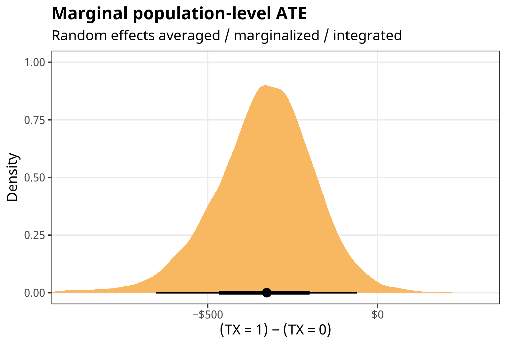
Integrate out random effects
# This takes a *really* long time comparisons( fit, variables = "TX", newdata = datagrid(cluster = c(-1:-100)), re_formula = NULL, allow_new_levels = TRUE, sample_new_levels = "gaussian" ) %>% tidy()## # A tibble: 1 × 6 ## type term contrast estimate conf.low conf.high ## <chr> <chr> <chr> <dbl> <dbl> <dbl> ## 1 response TX 1 - 0 -338. -779. -64.0marginal_ate_int <- comparisons( fit, variables = "TX", newdata = datagrid(cluster = c(-1:-100)), re_formula = NULL, allow_new_levels = TRUE, sample_new_levels = "gaussian" ) %>% posteriordraws()p_marginal_ate_int <- marginal_ate_int %>% group_by(drawid) %>% summarize(draw = mean(draw)) %>% ggplot(aes(x = draw)) + stat_halfeye(fill = colorspace::lighten(clrs[3], 0.4)) + scale_x_continuous(labels = label_dollar(style_negative = "minus")) + labs(x = "(TX = 1) − (TX = 0)", y = "Density", title = "Marginal population-level ATE", subtitle = "Random effects integrated out") + coord_cartesian(xlim = c(-900, 300)) + theme_nice() p_marginal_ate_int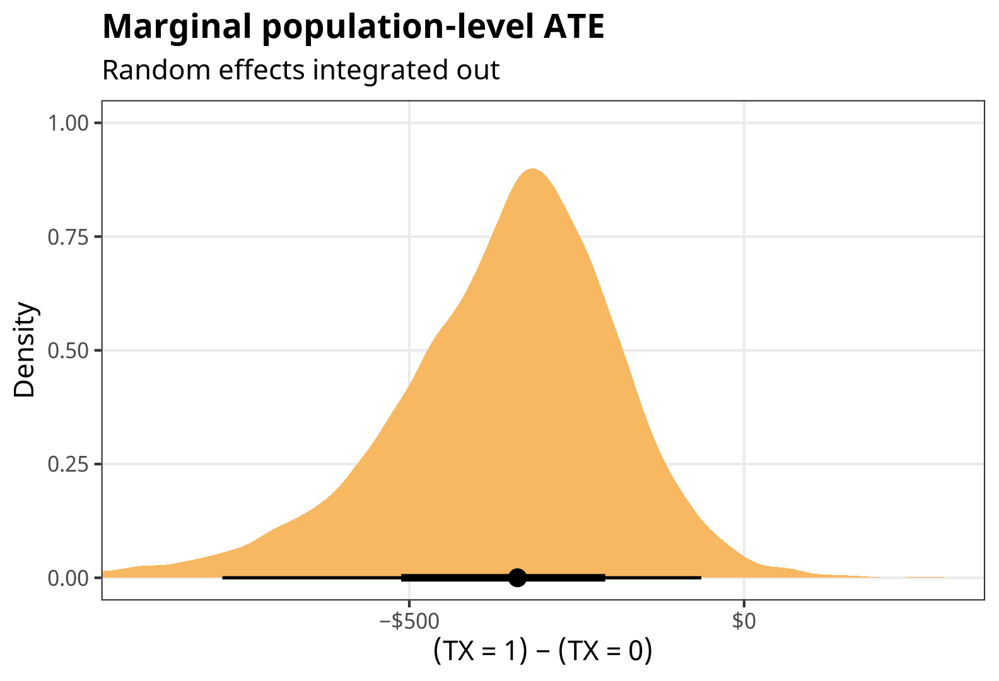
Ratios and multiplicative effects
Finally, we can work directly with the coefficients to get more slope-like effects, which is especially helpful when the coefficient of interest isn’t for a binary variable. Typically with GLMs with log or logit links (like logit, Poisson, negative binomial, lognormal, etc.) we can exponentiate the coefficient to get it as an odds ratio or a multiplicative effect. That works here too:
exp(B1)
## b_TX
## 0.495A one-unit increase in \(\text{TX}\) causes a 51% decrease (exp(B1) - 1) in the outcome. Great.
That’s all fine here because the lognormal model doesn’t have any weird nonlinearities or interactions, but in the case of logistic regression or anything with interaction terms, life gets more complicated, so it’s better to work with marginaleffects() instead of exponentiating things by hand. If we use type = "link" we’ll keep the results as logged odds, and then we can exponentiate them. All the other random effects options that we used before (re_formula = NA, re_formula = NULL, integrating effects out, and so on) work here too.
marginaleffects(
fit,
variable = "TX",
type = "link",
newdata = datagrid(TX = 0)
) %>%
mutate(across(c(dydx, conf.low, conf.high), ~exp(.))) %>%
select(rowid, type, term, dydx, conf.low, conf.high)
## rowid type term dydx conf.low conf.high
## 1 1 link TX 0.496 0.279 0.88We can visualize the odds-ratio-scale posterior for fun:
marginaleffects(
fit,
variable = "TX",
type = "link",
newdata = datagrid(TX = 0)
) %>%
posteriordraws() %>%
mutate(draw = exp(draw) - 1) %>%
ggplot(aes(x = draw)) +
stat_halfeye(fill = colorspace::darken(clrs[3], 0.4)) +
geom_vline(xintercept = 0) +
scale_x_continuous(labels = label_percent()) +
labs(x = "Percent change in outcome", y = "Density") +
theme_nice()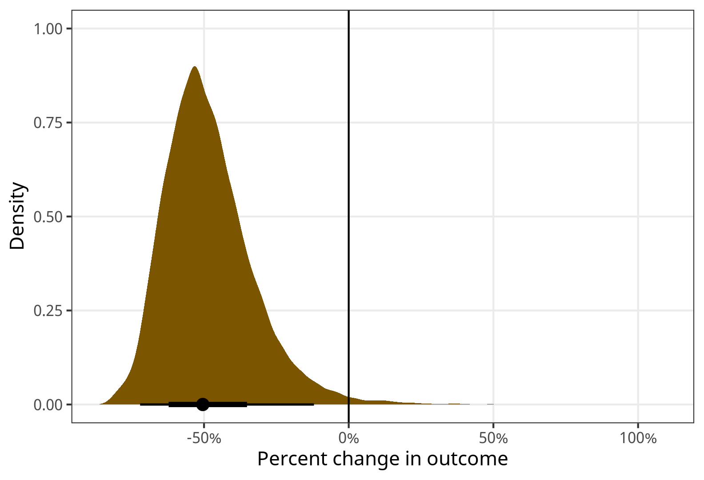
If we use type = "response", we can get slopes at specific values of the coefficient (which is less helpful here, since \(\text{TX}\) can only be 0 or 1; but it’s useful for continuous coefficients of interest).
Summary
Phew, that was a lot. Here’s a summary table to reference to help keep things straight.
Code
wrap_r <- function(x) glue::glue('<div class="sourceCode cell-code"><pre class="sourceCode r"><code class="sourceCode r">{x}</code></pre></div>')
conditional_out <- r"{predictions(
fit,
newdata = datagrid(TX = c(0, 1)),
by = "TX",
re_formula = NA
)}"
conditional_ate <- r"{comparisons(
fit,
variables = "TX",
re_formula = NA
)}"
marginal_out <- r"{predictions(
fit,
newdata = datagrid(TX = c(0, 1),
cluster = unique),
by = "TX",
re_formula = NULL
)}"
marginal_out_int <- r"{predictions(
fit,
newdata = datagrid(TX = c(0, 1),
cluster = c(-1:-100)),
re_formula = NULL,
allow_new_levels = TRUE,
sample_new_levels = "gaussian",
by = "TX"
)}"
marginal_ate <- r"{comparisons(
fit,
variables = "TX",
re_formula = NULL
) %>%
tidy()
}"
marginal_ate_int <- r"{comparisons(
fit,
variables = "TX",
newdata = datagrid(cluster = c(-1:-100)),
re_formula = NULL,
allow_new_levels = TRUE,
sample_new_levels = "gaussian"
) %>%
tidy()
}"
tribble(
~Effect, ~Formula, ~`{marginaleffects} code`,
"Average outcomes in typical group", "\\(\\textbf{E}(Y_{i_j} \\mid b_{0_j} = 0, \\text{TX} = \\{0, 1\\})\\)", wrap_r(conditional_out),
"ATE in typical group", "\\(\\textbf{E}(Y_{i_j} \\mid b_{0_j} = 0, \\text{TX} = 1) -\\)<br> \\(\\quad\\textbf{E}(Y_{i_j} \\mid b_{0_j} = 0, \\text{TX} = 0)\\)", wrap_r(conditional_ate),
"Average population-level outcomes (marginalized)", "\\(\\textbf{E}(Y_{i_j} \\mid \\text{TX} = \\{0, 1\\})\\)", wrap_r(marginal_out),
"Average population-level outcomes (integrated out)", "\\(\\textbf{E}(Y_{i_j} \\mid \\text{TX} = \\{0, 1\\})\\)", wrap_r(marginal_out_int),
"Population-level ATE (marginalized)", "\\(\\textbf{E}(Y_{i_j} \\mid \\text{TX} = 1) -\\)<br> \\(\\quad\\textbf{E}(Y_{i_j} \\mid \\text{TX} = 0)\\)", wrap_r(marginal_ate),
"Population-level ATE (integrated out)", "\\(\\textbf{E}(Y_{i_j} \\mid \\text{TX} = 1) -\\)<br> \\(\\quad\\textbf{E}(Y_{i_j} \\mid \\text{TX} = 0)\\)", wrap_r(marginal_ate_int)
) %>%
kbl(escape = FALSE, align = c("l", "l", "l")) %>%
kable_styling(htmltable_class = "table table-sm") %>%
pack_rows(index = c("Conditional effects" = 2, "Marginal effects" = 4)) %>%
column_spec(1, width = "25%") |>
column_spec(2, width = "35%") |>
column_spec(3, width = "40%")| Effect | Formula | {marginaleffects} code |
|---|---|---|
| Conditional effects | ||
| Average outcomes in typical group | \(\textbf{E}(Y_{i_j} \mid b_{0_j} = 0, \text{TX} = \{0, 1\})\) | |
| ATE in typical group | \(\textbf{E}(Y_{i_j} \mid b_{0_j} = 0, \text{TX} = 1) -\) \(\quad\textbf{E}(Y_{i_j} \mid b_{0_j} = 0, \text{TX} = 0)\) |
|
| Marginal effects | ||
| Average population-level outcomes (marginalized) | \(\textbf{E}(Y_{i_j} \mid \text{TX} = \{0, 1\})\) | |
| Average population-level outcomes (integrated out) | \(\textbf{E}(Y_{i_j} \mid \text{TX} = \{0, 1\})\) | |
| Population-level ATE (marginalized) | \(\textbf{E}(Y_{i_j} \mid \text{TX} = 1) -\) \(\quad\textbf{E}(Y_{i_j} \mid \text{TX} = 0)\) |
|
| Population-level ATE (integrated out) | \(\textbf{E}(Y_{i_j} \mid \text{TX} = 1) -\) \(\quad\textbf{E}(Y_{i_j} \mid \text{TX} = 0)\) |
|
And here are all the posteriors all together, for easier comparison:
Code
((p_conditional_preds + coord_cartesian(xlim = c(0, 1200))) | p_conditional_ate) /
((p_marginal_preds + coord_cartesian(xlim = c(0, 1200))) | p_marginal_ate) /
((p_marginal_preds_int + coord_cartesian(xlim = c(0, 1200))) | p_marginal_ate_int)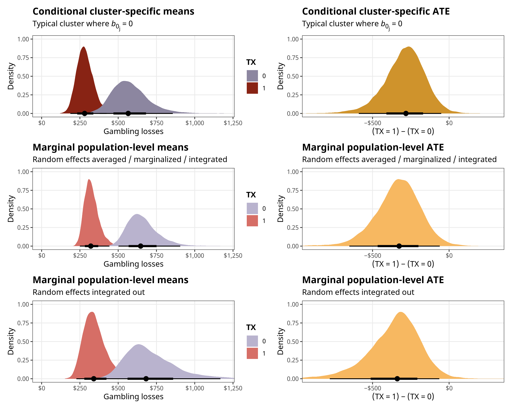